Amazon RDS Blue/Green Deployments
Amazon RDSの本番更新を、同期したステージング環境で検証してから短時間で切り替えるための運用パターン
インプレース更新との判断、制約、接続影響、実践手順を整理する
対象はAmazon RDS for MySQL、MariaDB、PostgreSQLのBlue/Green Deployments。Amazon AuroraのBlue/Green Deploymentsは別機能のため、Aurora固有の対応可否はAuroraの公式ドキュメントで確認
記載内容は2026年8月時点のAWS公式ドキュメントに基づく。対応エンジン・バージョン・リージョンは更新されるため、実施直前にAWS公式手順：Supported Regions and DB engines
今回の検証環境
2026年8月11日に東京リージョンで、RDS for PostgreSQL 13.23から18.4へのメジャーバージョン更新を検証。Blue/Green Deploymentの作成、Greenへの接続、PostgreSQLクライアント更新、BlueからGreenへの同期確認、切替画面の確認までを実施
| 項目 | Blue（現在の本番） | Green（切替候補） |
|---|---|---|
| DB識別子 | poc-pg-db | poc-pg-db-green-<RANDOM> |
| エンジン | PostgreSQL 13.23-rds.20260224 | PostgreSQL 18.4 |
| DBパラメータグループ | poc-pg13 | poc-pg18 |
| DBインスタンスクラス | db.t3.micro | db.t3.micro |
| 可用性構成 | Single-AZ | Single-AZ |
| ストレージ | 汎用SSD（gp2）20 GiB | 汎用SSD（gp2）20 GiB |
| TLS接続の実測 | TLS 1.2 | TLS 1.3 |
| 接続先 | <BLUE_ENDPOINT> | <GREEN_ENDPOINT> |
| 役割 | アプリケーションの接続先。読み書き可能 | 検証用の個別エンドポイント。既定で読み取り専用 |
GreenのDB識別子に付与されるランダム文字列とRDSエンドポイントの固有DNS名は、公開用ページでは伏せて記載
| 共通項目 | 検証値 |
|---|---|
| リージョン | アジアパシフィック（東京）ap-northeast-1 |
| Blue/Green Deployment名 | poc-pg-bg |
| データベース / マスターユーザー | pocdb / pocadmin |
| 接続元 | Red Hat Enterprise Linux 9.8 on EC2 |
| PostgreSQLクライアント | AppStreamの13.23から18.4へ更新 |
| 検証データ | bgtest.orders 100,000件と、Deployment作成後にBlueへ追加した1件 |
Greenへ接続するとサーバーはPostgreSQL 18.4、default_transaction_read_onlyはon、TimeZoneはAsia/Tokyo。Blueへ追加したorder_id = 100001がGreenでも参照でき、Blueの論理レプリケーションスロット3本はすべてactive = true、遅延は0 byteだった
スイッチオーバーは未実行。切替後の識別子とエンドポイントの動きはAWS公式仕様に基づく想定であり、実行後に実測結果を追記する
結論と使いどころ
Blue/Green Deploymentsは、本番のBlue環境を複製したGreen環境へ変更を先行適用し、レプリケーション追随と検証を完了してから切り替える方式
メジャーバージョン更新、パラメータ変更、インスタンスクラス変更、ストレージ構成変更などで、作業時間を本番停止時間から切り離せる
切替時はRDSが書き込み停止、接続切断、Greenへの追随待ち、DB識別子とエンドポイント名の付け替えを実行する
アプリケーションの接続先名は原則として維持されるが、既存コネクションは切断されるため、接続再試行とコネクションプールの振る舞いが成功条件になる
| 適する変更 | Blue/Greenを優先する理由 | 事前に確認すること |
|---|---|---|
| メジャー/マイナーのエンジン更新 | Greenでアプリ互換性とクエリ性能を確認してから切替可能 | 対象バージョン、拡張機能、ドライバー、論理レプリケーション時の制約 |
| DBパラメータ変更 | 本番への即時反映を避け、再起動を伴う設定もGreenで評価可能 | パラメータグループ、再起動要否、接続数、メモリ使用量 |
| インスタンス/ストレージ構成変更 | 新構成で負荷試験と性能比較を実施してから本番化可能 | Green側コスト、ストレージ初期化、性能試験シナリオ |
| 互換性のあるスキーマ変更 | 展開作業と切替を分離し、リスクの高い時間帯を短縮可能 | レプリケーション互換性、DDL/DCL、アプリの新旧両対応期間 |
インプレース更新との違い
| 観点 | インプレース更新 | Blue/Green Deployments |
|---|---|---|
| 変更対象 | 本番DBインスタンス自体を変更 | 本番を複製したGreen環境を変更 |
| 検証環境 | 別途用意しなければ本番と同一トポロジーでの検証は困難 | 読み取りレプリカ、Multi-AZ、バックアップ、Performance Insights、Enhanced Monitoringを含むトポロジーを複製 |
| 停止の主な時間 | 変更適用、再起動、互換性確認が本番作業に含まれる | 切替時の書き込み停止、接続再確立、Green追随待ちに集約 |
| 接続先 | 既存DBが継続するため通常は変更なし | Greenのエンドポイント名をBlueと同じ名前へ変更。IPアドレス直指定は不可 |
| 切り戻し | 変更内容に応じて復元、再変更、PITRを設計 | 切替後に自動のロールバック/スイッチバックはない。旧Blueを残しても新本番の書き込みは反映されない |
| 費用 | 通常は既存環境の費用のみ | BlueとGreenが並行稼働する期間はDB、ストレージ、I/O、追加機能の費用が概ね二重 |
| 運用の複雑さ | 小規模な変更では低い | 事前検証、同期監視、依存サービスの確認、旧Blue削除判断が必要 |
切替中にRDSは両環境の新規書き込みを停止し、接続を切断する。AWSは単一リージョン構成で直接エンドポイント接続時のライター停止を通常5秒以下と案内しているが、実際の影響は長時間トランザクション、レプリケーション遅延、DNSキャッシュ、クライアント実装、接続プールに左右される
停止時間の目標は、実機に近いワークロードで接続再試行を含めて測定し、業務要件と照合
仕組みと切替の内部フロー
BlueとGreenの関係
Blueは現在の本番環境、Greenは同期するステージング環境。作成時にRDSはBlueのプライマリ、読み取りレプリカ、Multi-AZ構成、ストレージ、スナップショット、監視機能などのトポロジーをGreenへ複製し、BlueのプライマリからGreenのプライマリへレプリケーションを設定する
Greenは既定で読み取り専用。Greenへの書き込みを有効にすると、レプリケーション競合や切替後の意図しないデータ混入につながるため、原則として読み取り検証に限定
今回の検証では、Blue/Green Deploymentの作成処理中に別DBインスタンスであるGreenが作られ、そのGreenがPostgreSQL 18.4へ更新された。切替前の時点でBlueは13.23、Greenは18.4として同時に稼働しており、Blueへの更新データがGreenへ継続してレプリケーションされる
「Switch over」は旧Blueを13.23から18.4へ変換する操作ではない。すでに18.4で稼働しているGreenを新本番にするため、最終同期後にDB識別子とエンドポイント名を付け替える操作である
| タイミング | 旧Blue | Green | データ同期と接続先 |
|---|---|---|---|
| Deployment作成前 | poc-pg-db / PostgreSQL 13.23 | 存在しない | アプリはBlueの既存エンドポイントへ接続 |
| 作成後・切替前 | poc-pg-db / PostgreSQL 13.23。引き続き本番 | poc-pg-db-green-<RANDOM> / PostgreSQL 18.4。既定で読み取り専用 | BlueからGreenへレプリケーションを継続。アプリはBlue、検証端末だけGreen固有エンドポイントへ接続 |
| 切替処理中 | 新規書き込みと接続を停止 | 新規書き込みと接続を停止し、Blueへの追随完了を待機 | 既存接続を切断し、論理レプリケーションではシーケンス値も同期してから名称を変更 |
| 切替後 | poc-pg-db-old<n>へ改名され、読み取り専用で残存 | poc-pg-dbと元の本番エンドポイント名を引き継ぎ、新本番になる | BlueからGreenへのレプリケーションは終了。アプリは同じRDSエンドポイント名へ再接続するが、接続先実体はPostgreSQL 18.4 |
切替でRDSが実行すること
- スイッチオーバーガードレールによるヘルス、レプリケーション、長時間トランザクションの確認
- BlueとGreenのプライマリに対する新規書き込みの停止
- 両環境のDB接続の切断と新規接続の一時停止
- GreenがBlueへ追随している状態までの待機
- PostgreSQL論理レプリケーションではGreenのシーケンス値をBlueに合わせて更新
- GreenのDB識別子とエンドポイント名をBlueの名称へ変更し、旧Blueには
-old<n>を付与 - 接続再開と新本番Greenに対する書き込み再開
切替開始から完了までの間はBlueからGreenへのレプリケーションが維持され、RDSは最終的な追随を確認してから名称を変更する。切替完了後はレプリケーションが停止するため、新本番で発生した書き込みは旧Blueへ戻らない
切替を、Greenインスタンスに対する手動の「昇格」と混同しないこと。Greenを手動で昇格するとレプリケーションが切れ、Blue/Green Deploymentは無効構成になる
PostgreSQLのレプリケーション方式
RDS for PostgreSQLは通常は物理レプリケーションを使用する。一部のソースバージョンからメジャーバージョン更新を指定した場合は論理レプリケーションを使用し、前提と制約が増える
| 方式 | 主な条件 | 設計上の注意 |
|---|---|---|
| 物理レプリケーション | 同一メジャーバージョン内の更新またはエンジン更新なし | Greenは厳格な読み取り専用。Greenでのスキーマ変更は不可 |
| 論理レプリケーション | 対象のPostgreSQLバージョンからメジャー更新を指定 | DDL/DCL、ラージオブジェクト、主キーのない表、シーケンス、マテリアライズドビュー、WAL容量を個別に評価 |
論理レプリケーションでは、Blueで実行したDDLはGreenへ複製されない
BlueにDDL変更を検出するとReplication degradedとなり、Greenを含むDeploymentの作り直しが必要になる
主キーのない表はUPDATE/DELETEを扱えないため、主キー追加または性能影響を評価したうえでREPLICA IDENTITY FULLを検討
対応条件・制約・依存関係
| 分類 | 確認事項 | 対応方針 |
|---|---|---|
| 対象エンジン | RDS for MySQL 5.7以降、MariaDB 10.2以降、PostgreSQL 11.1以降が対象。Db2、SQL Server、Oracleは対象外 | 正確な対応マイナーバージョンとメジャー更新可否を公式一覧で確認 |
| バックアップ | MySQL/MariaDBおよびPostgreSQLの物理レプリケーションでは自動バックアップが必須。PostgreSQLの論理レプリケーションではAWSの準備要件に自動バックアップの明示的な必須記載はない | 方式を問わず保持期間を1日以上にし、切替前の手動スナップショット、PITR、復旧担当を作業計画へ記載することを推奨 |
| 削除保護 | Blue/Green Deploymentの作成と切替に削除保護は必須ではない | 検証環境は削除計画を優先して無効でもよい。本番は切替後の新本番で有効化を検討。切替前にGreenを含めて削除する場合はGreenの削除保護を無効化 |
| トポロジー | Multi-AZ DBインスタンスは対象。Multi-AZ DBクラスター、カスケード読み取りレプリカ、クロスリージョン読み取りレプリカは対象外 | 対象外の構成は別移行方式または構成変更を検討 |
| 暗号化 | 暗号化あり/なしを切替途中で変更不可 | 暗号化方式の変更はスナップショット復元など別計画 |
| Secrets Manager | マスターユーザーパスワードのSecrets Manager管理は非対応 | 事前に認証情報管理方式を確認し、必要な再設定を手順化 |
| IaC | CloudFormationによるBlue/Green Deployment管理は非対応 | 作業手順、CLI実行記録、タグ、構成差分を別途管理 |
| 同一アカウント | BlueとGreenは同一AWSアカウント内 | アカウント間移行やリージョン移行にはDMSなど別方式を選定 |
| 外部連携 | ゼロETL Redshift統合は切替前に削除し、切替後に再作成。DMSタスクは切替後に再作成が必要 | データ連携の停止、再開、整合性確認を作業計画へ含める |
| PostgreSQL論理レプリケーション | DDL/DCL、ラージオブジェクト、unlogged tableは複製されない。データベースごとに論理スロットを使用し、Green側の適用は単一スレッド | 作成後はBlueのDDL/DCLを凍結。全テーブルの主キー、WAL容量、書き込み量、スロット数、拡張機能を事前評価 |
切替後、DBインスタンス識別子とエンドポイント名はGreenへ引き継がれる一方、Green固有のDbiResourceIdはBlueとは異なる。AWS Backup、IAM DB認証ポリシー、リソースIDを参照する監視、タグ連携、運用自動化は切替後に再確認
タグは作成時にBlueからGreenへコピーされるが、作成後のタグ変更は同期されない。切替ではBlue側のタグがGreen側を上書きするため、作業中のタグ変更を避けるか、切替後の再適用を手順化
実践手順
以下はRDS for PostgreSQLまたはRDS for MySQL/MariaDBを対象に、Blue/Green Deploymentを本番へ適用するための標準手順。実行前に変更管理の承認、復旧判断者、業務停止連絡、削除猶予期間を確定
1. 作業前の棚卸しとベースライン取得
対象DB、エンジンとバージョン、トポロジー、保留中の変更、バックアップ、監視、外部連携、接続方式を記録。AWS CLIは意図したアカウントとリージョンを明示し、出力は変更記録に保管
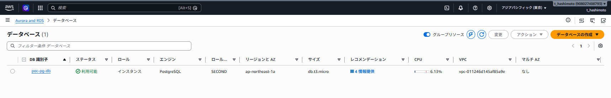
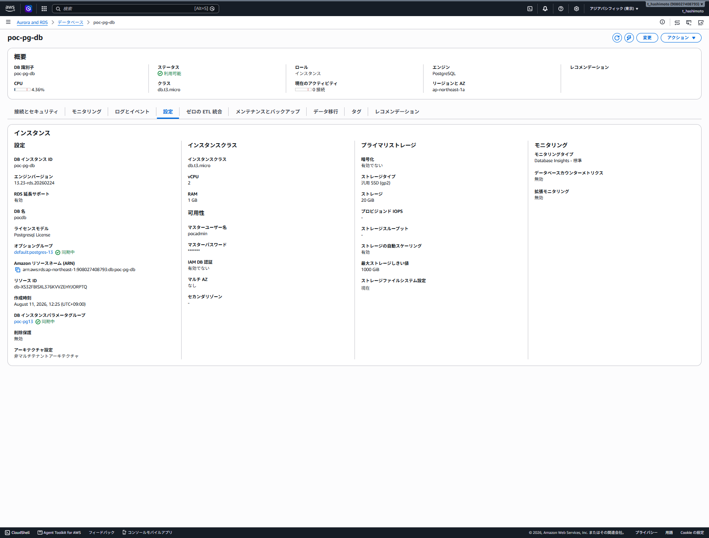
aws sts get-caller-identityaws rds describe-db-instances \
--db-instance-identifier <BLUE_DB_INSTANCE_IDENTIFIER> \
--query "DBInstances[0].{Identifier:DBInstanceIdentifier,ResourceId:DbiResourceId,Engine:Engine,EngineVersion:EngineVersion,Class:DBInstanceClass,MultiAZ:MultiAZ,Endpoint:Endpoint.Address,BackupRetention:BackupRetentionPeriod,DeletionProtection:DeletionProtection,Pending:PendingModifiedValues}" \
--output jsonaws rds describe-db-instances \
--db-instance-identifier <BLUE_DB_INSTANCE_IDENTIFIER> \
--query "DBInstances[0].ReadReplicaDBInstanceIdentifiers" \
--output json2. 変更内容と復旧条件を固定
目標エンジンバージョン、パラメータグループ、DBインスタンスクラス、ストレージ構成、変更対象の読み取りレプリカを一覧化。切替前の中止条件、切替後の受入基準、旧Blueを削除する条件も事前に合意
| 項目 | 記録例 |
|---|---|
| 作業目的 | PostgreSQLのメジャーバージョン更新とパラメータ見直し |
| 中止条件 | Greenのレプリケーション遅延、性能劣化、互換性エラー、外部連携の未解決 |
| 切替実施条件 | 受入試験完了、監視正常、レプリケーション追随、長時間トランザクションなし |
| 旧Blue保持 | 切替後の業務・性能・バックアップ確認を終えるまで読み取り専用で保持 |
| 削除判断 | 保留期間終了、PITR確認、バックアップ確認、監視/連携更新、費用承認 |
3. エンジン固有の前提を確認
MySQL/MariaDBでは自動バックアップを有効化。PostgreSQLでメジャーバージョン更新を行う場合は、適用されるレプリケーション方式を確認し、論理レプリケーションの前提パラメータ、主キー、WAL保持容量を確認
PostgreSQLの論理レプリケーションを使う場合は、BlueへカスタムDBパラメータグループを関連付け、rds.logical_replication = 1を設定して再起動する
DBインスタンスとパラメータグループが同期していない状態ではDeploymentを作成できない
今回のBlueではpoc-pg13を使用し、設定がonであることを確認
SHOW rds.logical_replication;-- 主キーのない通常テーブルを確認
SELECT n.nspname AS schema_name,
c.relname AS table_name
FROM pg_class c
JOIN pg_namespace n ON n.oid = c.relnamespace
LEFT JOIN pg_index i ON i.indrelid = c.oid AND i.indisprimary
WHERE c.relkind = 'r'
AND n.nspname NOT IN ('pg_catalog', 'information_schema')
AND i.indexrelid IS NULL
ORDER BY 1, 2;論理レプリケーションでは、Greenが適用するまでBlue側にWALが保持される。ピーク時間帯のTransactionLogsGeneration、TransactionLogsDiskUsage、OldestReplicationSlotLag、FreeStorageSpaceを確認し、レプリケーション遅延に耐える空き容量を確保
4. Blue/Green Deploymentを作成
RDSコンソールのDatabasesでBlueのプライマリを選択し、Actions ＞ Create blue/green deploymentを選択。BlueのDB識別子、Greenの目標エンジンバージョン、パラメータグループ、必要に応じたインスタンスクラスとストレージ設定を確認して作成
アクションを開き、ブルー/グリーンデプロイの作成を選択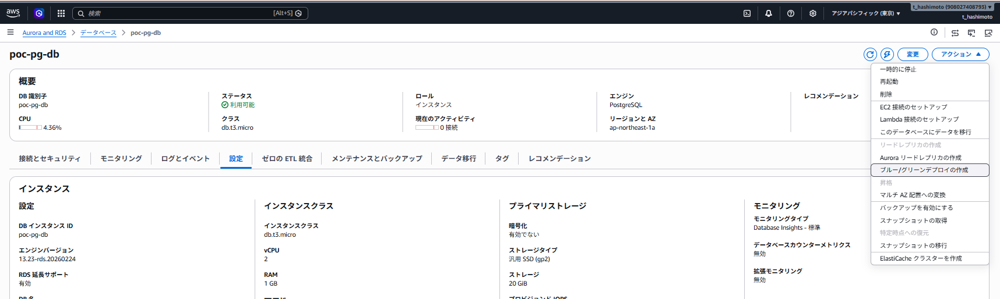
| コンソール項目 | 今回の指定値 |
|---|---|
| Blue/Green Deployment名 | poc-pg-bg |
| Blue DB識別子 | poc-pg-db |
| Greenエンジンバージョン | PostgreSQL 18.4-R1 |
| Green DBパラメータグループ | poc-pg18 |
| インスタンス / ストレージ | db.t3.micro / gp2 20 GiB |
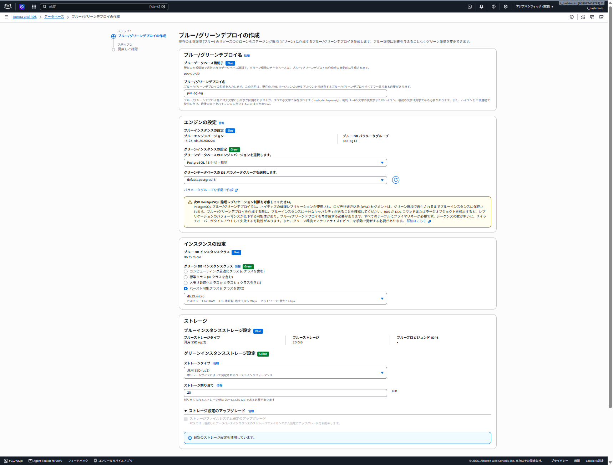
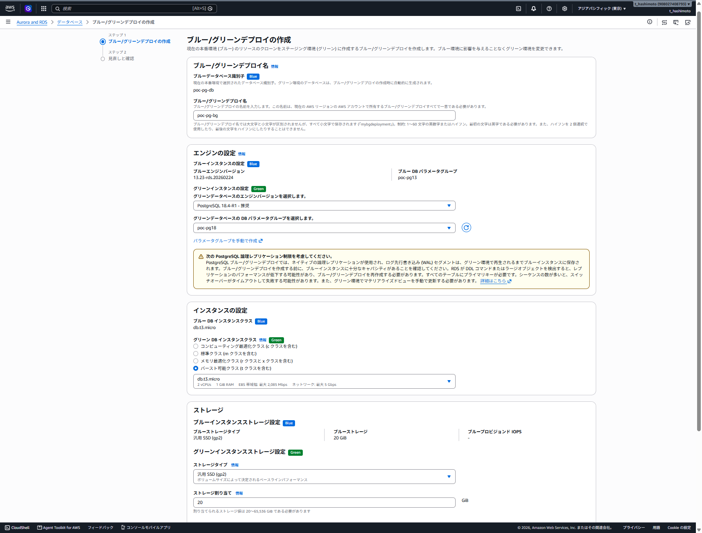
見直しと確認でBlueとGreenのエンジンバージョン、DBパラメータグループ、インスタンスクラス、ストレージを照合し、作成を選択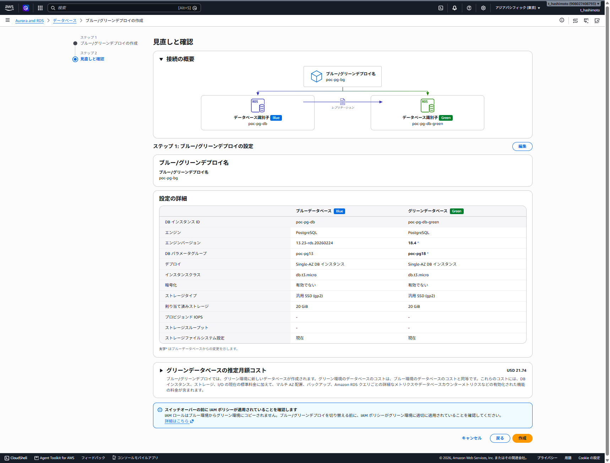
aws rds create-blue-green-deployment \
--blue-green-deployment-name <BLUE_GREEN_DEPLOYMENT_NAME> \
--source arn:aws:rds:<REGION>:<ACCOUNT_ID>:db:<BLUE_DB_INSTANCE_IDENTIFIER> \
--target-engine-version <TARGET_ENGINE_VERSION> \
--target-db-parameter-group-name <TARGET_DB_PARAMETER_GROUP>上記は最小例。インスタンスクラス、ストレージ、IOPS、スループット、Optimized Writesなどの変更を同時に行う場合は、実機の選択値とAWS公式手順：create-blue-green-deploymentの引数を対応付けて実行
5. Greenの作成完了と同期状態を確認
作成直後は、スナップショットから復元したGreenのストレージで遅延ロードが進む。十分なI/O性能が必要な試験では、ストレージ初期化の進捗も確認してから測定を開始
今回の作成完了後は、Blueのpoc-pg-dbがPostgreSQL 13.23のまま本番として稼働し、別DBインスタンスpoc-pg-db-green-<RANDOM>がPostgreSQL 18.4としてAvailableになった。この時点でエンジン更新済みのGreenが存在し、切替時に旧Blueを更新する構成ではない
利用可能であることを確認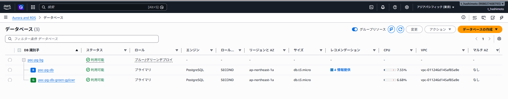
aws rds describe-blue-green-deployments \
--blue-green-deployment-identifier <BLUE_GREEN_DEPLOYMENT_IDENTIFIER> \
--query "BlueGreenDeployments[0].{Status:Status,Replication:StatusDetails,Source:Source,Target:Target,Tasks:Tasks}" \
--output jsonaws rds describe-db-instances \
--db-instance-identifier <GREEN_DB_INSTANCE_IDENTIFIER> \
--query "DBInstances[0].{Status:DBInstanceStatus,StorageOperation:StorageOperationStatus,StorageProgress:StorageOperationPercentProgress,Endpoint:Endpoint.Address,EngineVersion:EngineVersion}" \
--output json6. Greenで受入試験を実施
Green固有のエンドポイントを用い、アプリケーションの起動、読み取り画面、バッチのドライラン、主要SQL、実行計画、接続数、CPU、メモリ、待機イベント、エラー率を確認。データ変更を伴う試験はレプリケーション競合を起こすため、実施範囲と後始末をDBAと合意してから実施
psql "host=<GREEN_ENDPOINT> port=5432 dbname=pocdb user=pocadmin sslmode=require connect_timeout=10"SELECT version(), current_setting('default_transaction_read_only') AS read_only, current_setting('TimeZone') AS timezone;実測ではPostgreSQL 18.4、default_transaction_read_only = on、TimeZone = Asia/Tokyoを確認し、bgtest.ordersの100,000件を参照できた。Greenの個別エンドポイントへ接続するのは切替前の検証時だけであり、既存アプリケーションは引き続きBlueの本番エンドポイントを使用
| 確認領域 | 受入基準の例 |
|---|---|
| アプリ接続 | TLS、認証、接続プール、ドライバー、IAM DB認証の接続成功 |
| 機能 | 主要画面、検索、帳票、バッチ、拡張機能、ストアドプロシージャの期待結果 |
| 性能 | 主要クエリの応答時間、DBLoad、CPU、メモリ、ロック、I/Oが許容範囲 |
| 運用 | バックアップ、監視、ログ、アラーム、タグ、EventBridge、外部連携の確認 |
7. RHEL 9.8のPostgreSQLクライアントを13.23から18.4へ更新
PostgreSQL 13.23のpsqlはGreenの18.4へ接続できたが、メジャーバージョン差の警告が表示された。さらにpg_dump 13.23は新しい18.4サーバーを扱えず、server version: 18.4; pg_dump version: 13.23として停止した
pg_dump "host=<GREEN_ENDPOINT> port=5432 dbname=pocdb user=pocadmin sslmode=require" --schema-only > /dev/nullRHEL 9.8 AppStreamではpostgresql:18のclientプロファイルを指定して更新。dnf module enableだけではストリーム選択にとどまるため、既存クライアントを実際に18へ更新する場合はdnf module install postgresql:18/clientを実行する
dnf module install postgresql:18/client今回の実行ではストリーム18が有効になり、サーバーパッケージを追加せず、既存のpostgresqlとpostgresql-private-libsが13.23から18.4へ更新された
psql --versionpg_dump --version両方が18.4になった後、同じpg_dump 18.4でBlueのPostgreSQL 13.23とGreenの18.4に対するスキーマダンプが成功した
コマンドが何も表示せずシェルへ戻れば、標準出力を/dev/nullへ捨てているため正常
入力するパスワードはOSのrootではなく、RDSユーザーpocadminのパスワード
pg_dump "host=<BLUE_ENDPOINT> port=5432 dbname=pocdb user=pocadmin sslmode=require" --schema-only > /dev/nullpg_dump "host=<GREEN_ENDPOINT> port=5432 dbname=pocdb user=pocadmin sslmode=require" --schema-only > /dev/null8. 切替直前のレプリケーション確認と中止判断
切替直前に、書き込み負荷と長時間トランザクションを低くし、レプリケーション遅延をほぼゼロに近づける
MySQL/MariaDBはGreenのReplicaLag、PostgreSQLの論理レプリケーションはBlueのOldestReplicationSlotLagを確認DatabaseConnectionsとPerformance InsightsのDBLoadも確認
今回の検証ではDeployment作成後にBlueへ1件追加し、同じ行がGreenへ複製されることを確認。切替前までBlueが書き込み元、Greenが同期先として動作していることを実データで確認した
INSERT INTO bgtest.orders (customer_id, status, amount, ordered_at, note) VALUES (9999, 'pending', 184.18, current_timestamp, 'bg-replication-test-20260811') RETURNING order_id;SELECT order_id, customer_id, status, amount, ordered_at, note FROM bgtest.orders WHERE note = 'bg-replication-test-20260811';SELECT slot_name,
active,
confirmed_flush_lsn,
pg_current_wal_lsn() AS current_wal_lsn,
pg_wal_lsn_diff(pg_current_wal_lsn(), confirmed_flush_lsn) AS lag_bytes
FROM pg_catalog.pg_replication_slots
WHERE slot_type = 'logical';実測ではデータベースごとの論理レプリケーションスロット3本がすべてactive = trueで、confirmed_flush_lsnとpg_current_wal_lsn()が一致し、lag_bytes = 0だった。長時間トランザクション、Greenのヘルス異常、互換性未解決、連携先未更新のいずれかがあれば切替を中止し、Greenを修正またはDeploymentを作り直す
PostgreSQLの論理レプリケーションは統計情報を複製しないため、AWSは切替前にGreenでANALYZEを実行するよう推奨している
セッション単位で読み取り専用を解除して実行し、作業後はセッションを終了
拡張機能はインストール済みバージョンを確認し、新エンジンに対応する更新が必要なものだけALTER EXTENSION ... UPDATEを実行
SET default_transaction_read_only = off;
ANALYZE VERBOSE;
SET default_transaction_read_only = on;SELECT name, default_version, installed_version FROM pg_available_extensions WHERE installed_version IS NOT NULL ORDER BY name;ALTER EXTENSION pg_stat_statements UPDATE;切替直前にはBlueの手動スナップショットも作成する。スナップショットは切替後の自動スイッチバックではなく、復旧判断時の選択肢として使用
aws rds create-db-snapshot \
--db-instance-identifier poc-pg-db \
--db-snapshot-identifier poc-pg-db-before-switch-202608119. スイッチオーバーを実行
RDSコンソールでBlue/Green Deploymentを選択し、Actions ＞ Switch overを選択
対象リソースを確認し、許容停止時間に合わせてタイムアウトを設定して実行
AWS CLIでは秒数でタイムアウトを指定でき、既定値は300秒
今回の画面では、BlueのPostgreSQL 13.23とGreenの18.4、DBパラメータグループpoc-pg13とpoc-pg18が並んで表示される。ここでSwitch overを押しても旧Blueのエンジン更新は始まらず、ガードレール、書き込み停止、接続切断、最終同期、識別子とエンドポイント名の付け替えが開始される
アクションを開き、切り替えを選択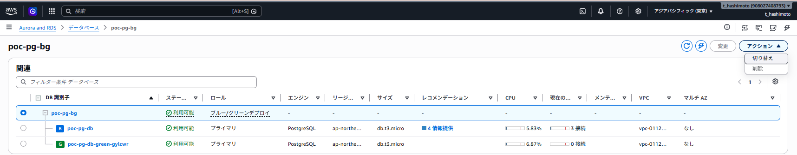
切り替えを選択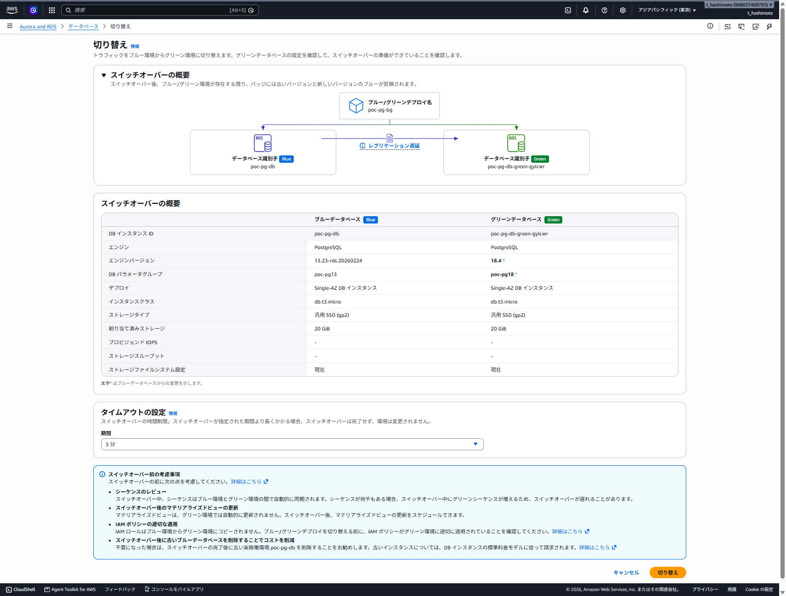
aws rds switchover-blue-green-deployment \
--blue-green-deployment-identifier <BLUE_GREEN_DEPLOYMENT_IDENTIFIER> \
--switchover-timeout 60010. 切替後の受入確認と旧Blueの保護
新本番のDB識別子とエンドポイントが従来どおりであること、アプリが再接続して書き込みを再開したこと、エラー率と遅延が許容範囲であることを確認。旧Blueは-old<n>が付いた読み取り専用のリソースとして残るため、削除判断が完了するまで書き込みを有効化しない
poc-pg-dbを引き継ぎ、旧Blueがpoc-pg-db-old1として残っていることを確認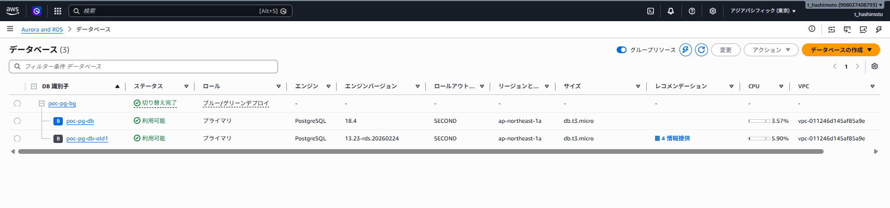
poc-pg-db-old1を選択し、削除前の確認対象として識別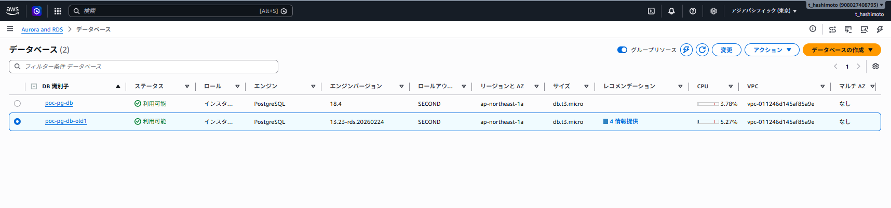
aws rds describe-blue-green-deployments \
--blue-green-deployment-identifier <BLUE_GREEN_DEPLOYMENT_IDENTIFIER> \
--query "BlueGreenDeployments[0].{Status:Status,Source:Source,Target:Target}" \
--output jsonaws rds describe-db-instances \
--db-instance-identifier <PRODUCTION_DB_INSTANCE_IDENTIFIER> \
--query "DBInstances[0].{Identifier:DBInstanceIdentifier,ResourceId:DbiResourceId,Endpoint:Endpoint.Address,EngineVersion:EngineVersion,Status:DBInstanceStatus}" \
--output jsonDNS・接続・停止影響の設計
スイッチオーバーではGreenのDB識別子とエンドポイント名をBlueの名称へ変更するため、アプリケーションの接続文字列は通常変更不要。ただし切替処理で既存接続は落ち、名前解決先は新本番へ変わる
| 項目 | 推奨 | 避けること |
|---|---|---|
| 接続先 | RDSエンドポイント名、または対応するAmazon RDS Proxyを利用 | RDSのIPアドレスを固定値で保持 |
| アプリ再試行 | 一時的な接続エラーを判定し、指数バックオフと上限付き再試行を実装 | 接続エラーを即時に恒久障害として扱う実装 |
| DNSキャッシュ | RDS DNSゾーンの既定値に合わせ、クライアントやネットワークでTTLを5秒より長くしない | 長いDNSキャッシュによって切替後も旧Blueへ接続し続ける設定 |
| トランザクション | 再実行可能性、冪等性、二重実行防止、クライアント側タイムアウトを事前検証 | 切替時に長時間更新や一括ジョブを走らせる運用 |
| RDS Proxy | 利用する場合はBlueをProxyへ登録してからDeploymentを作成。単一リージョン構成での接続断短縮を実機検証 | 作成後のBlue/Green DeploymentへProxyを後から登録する操作 |
標準構成のWordPressはMySQL/MariaDBを使用するが、接続先の考え方は同じ。切替前の本番WordPressは従来のBlueエンドポイントを使い続け、Greenを試験する検証用WordPressだけがGreen固有エンドポイントへ一時的に接続する
切替後はGreenが元のBlueのDB識別子とエンドポイント名を引き継ぐため、本番のDB_HOSTは原則変更不要。ただし既存DB接続は切断されるため、Webサーバーと接続プールの再接続動作を事前に確認
AWSは2026年1月から、単一リージョン構成の直接エンドポイント接続でライター停止を通常5秒以下、AWS Advanced JDBC Driver利用時は通常2秒以下と案内している。これはアプリケーション全体のSLOや完了時間を保証する値ではないため、接続プールと再試行を含むエンドツーエンド（End-to-End）試験で採用可否を判断